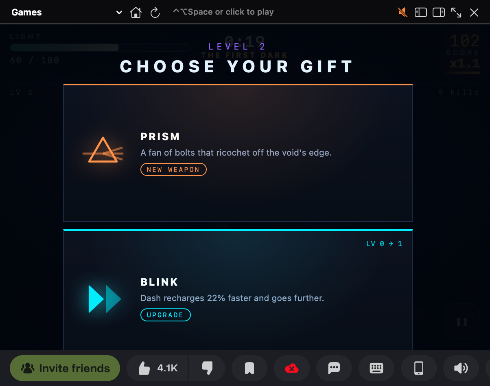

Eine Gratis-App von Shadow Games
Spiele CrazyGames in einem kleinen Fenster über World of Warcraft. Warteschlange, Flugroute, warten auf den Raid: schnell eine Runde spielen, ohne Alt+Tab.
Gratis · Windows 10/11 und macOS 13+ · Open Source auf GitHub

SideQuest ist ein kleines Fenster, das immer über deinem Spiel bleibt. Darin läuft die echte CrazyGames-Seite, auf das Spiel zugeschnitten. Spielstände, Logins und Multiplayer funktionieren also genau wie auf der Website.
Links oder rechts andocken, Grösse ändern, transparent machen. Es bleibt über WoW, bis du es ausblendest.
Ctrl+Alt+Leertaste schickt deine Tastatur zwischen Minispiel und WoW hin und her. Kein Alt+Tab, kein Fokusverlust.
Acht schnelle Favoriten liegen auf Hotkeys, und Browse öffnet die ganze CrazyGames-Bibliothek.
Windows: Ctrl+Alt · Mac: Control+Option. Sie funktionieren, während du in WoW bist.
SideQuest greift nie auf WoW zu. Es ist ein separates Fenster auf deinem Desktop, wie die Overlays von Discord oder OBS. Es liest keinen WoW-Speicher, schleust nichts ein und ändert keine Spieldateien.
WoW-Addons können keine Webseiten anzeigen. Die Pokémon-Addons haben einen ganzen Game Boy in WoWs Skriptsprache nachgebaut. Das klappt für eine Konsole, aber nicht für Tausende Browsergames. Ein eigenes Fenster kann sie alle zeigen.
Die App ist noch nicht signiert, darum kann dein System nicht prüfen, wer sie gemacht hat. Der Code ist öffentlich auf GitHub, und die Warnung verschwindet, sobald wir sie signieren.
Ja. Alles, was im Fenster oder im randlosen Vollbild läuft, funktioniert, nicht nur WoW.
Es ist eine native Mac-Version mit denselben Funktionen und Hotkeys, einfach mit Control+Option statt Ctrl+Alt.
Wir machen Browsergames wie Lumen und Brettspiele in der Schweiz.